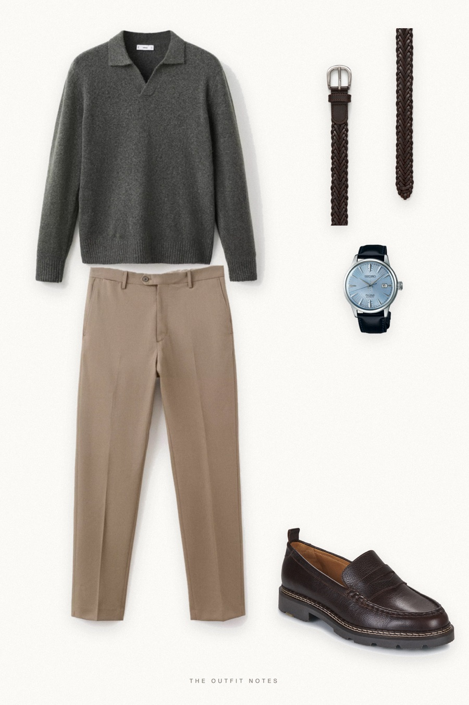
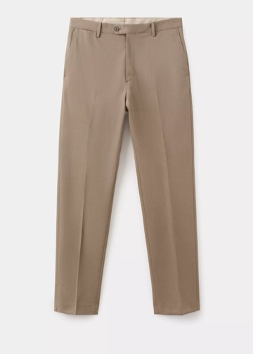
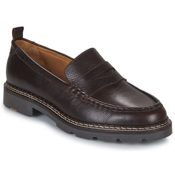

Pine & Stone
christmas dinner, no tie

What to wear for Christmas dinner as a man: a dark green wool knit polo from Mango, stone pleated virgin wool trousers, Pellet Milo chocolate loafers, a braided leather belt and a Seiko Presage Cocktail Time with an ice-blue dial. A relaxed old money outfit that looks put together without a jacket.
The pieces
This page contains affiliate links: if you buy through them, we may earn a commission at no extra cost to you. Disclosure.
 Mango
Mango
Dark open-collar knit polo
Shop
Mango
Stone pleated wool trousers
Shop
Pellet
Matte brown penny loafers
Shop ARKET
ARKET
Brown braided leather belt
Shop Seiko
Seiko
Ice-blue dial dress watch
Shop
Prices are indicative, taken when the look was published, and may have changed. Pictures of the outfit are AI-generated illustrations of real products; the product photos are the retailers' own.
Published 1 October 2026.